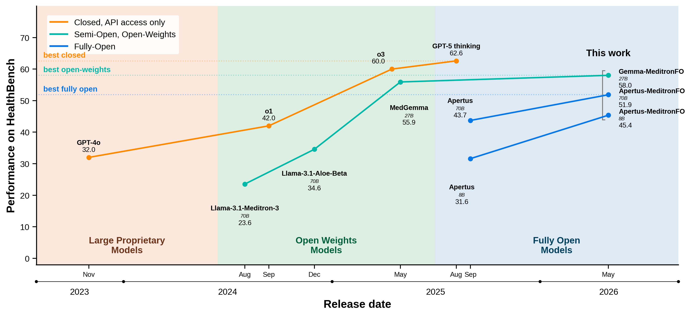
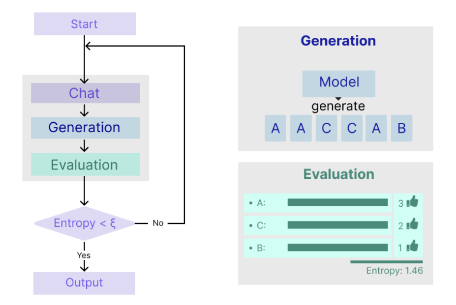
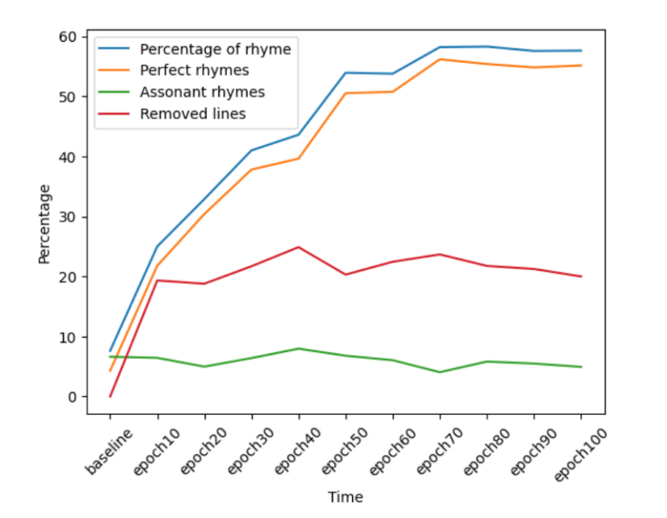

@misc{theimerlienhard2026fullyopenmeditronauditable,
title={Fully Open Meditron: An Auditable Pipeline for Clinical LLMs},
author={Xavier Theimer-Lienhard and Mushtaha El-Amin and Fay Elhassan and Sahaj Vaidya and Victor Cartier-Negadi and David Sasu and Lars Klein and Mary-Anne Hartley},
year={2026},
eprint={2605.16215},
archivePrefix={arXiv},
primaryClass={cs.AI},
url={https://arxiv.org/abs/2605.16215}
}

@inproceedings{sallinen2025llama3meditron,
title={Llama-3-Meditron: An Open-Weight Suite of Medical {LLMs} Based on Llama-3.1},
author={Sallinen, A. and Solergibert, A.-J. and Zhang, M. and Boy{\'e}, G. and Dupont-Roc, M. and Theimer-Lienhard, X. and Boisson, E. and Bernath, B. and Hadhri, H. and Tran, A. and Rabbani, T. and Brokowski, T. and {Meditron Medical Doctor Working Group} and Rudner, T. G. J. and Hartley, M.-A.},
booktitle={AAAI 2025 Workshop on Generative AI for Health (GenAI4Health)},
year={2025},
url={https://openreview.net/forum?id=ZcD35zKujO}
}

@inproceedings{popescu-belis-etal-2023-gpoet,
title={{GP}oe{T}: a Language Model Trained for Rhyme Generation on Synthetic Data},
author={Popescu-Belis, Andrei and Atrio, {\`A}lex R. and Bernath, Bastien and Boisson, Etienne and Ferrari, Teo and Theimer-Lienhard, Xavier and Vernikos, Giorgos},
booktitle={Proceedings of the 7th Joint {SIGHUM} Workshop on Computational Linguistics for Cultural Heritage, Social Sciences, Humanities and Literature},
month=may,
year={2023},
address={Dubrovnik, Croatia},
publisher={Association for Computational Linguistics},
url={https://aclanthology.org/2023.latechclfl-1.2/},
doi={10.18653/v1/2023.latechclfl-1.2},
pages={10--20}
}